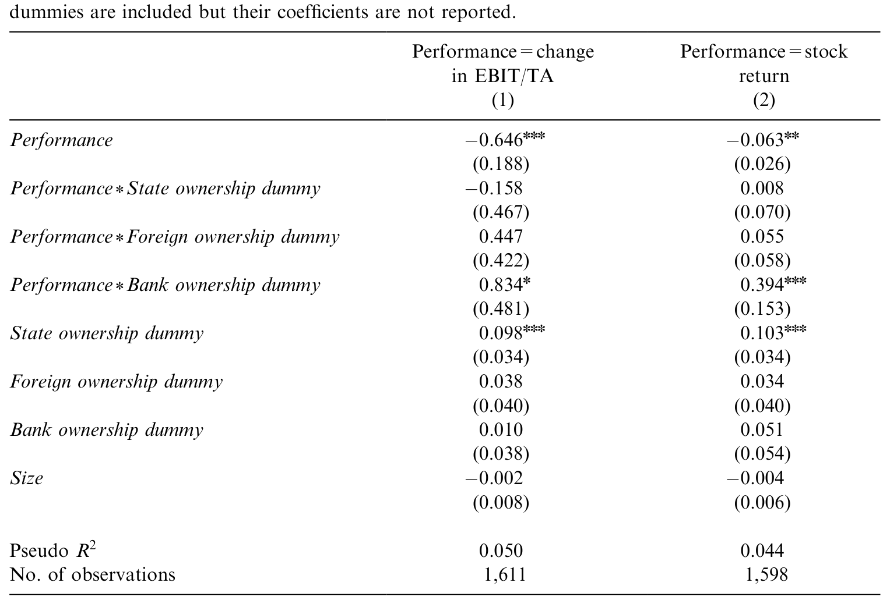
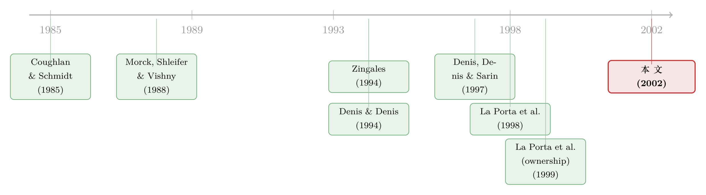

谁来炒掉老板？——当法律不管事，意大利公司里那场无声的权力制衡
本文读的是 Volpin (2002, Journal of Financial Economics)：在投资者保护薄弱、控股股东遍地、金字塔层层叠叠的意大利，公司治理好不好，不取决于有没有「大股东」，而取决于这个大股东是谁、控制权握得有多牢、自己又押了多少身家。当控股家族亲自坐进管理层、当控制权稳稳攥在一人之手、当他持有的现金流权又不到一半时，治理最差——表现为更替对业绩几乎不敏感，以及更低的 Q 值。
1 一个被「投资者保护」绕开的问题
过去二十多年里，公司治理研究有一条几乎成了共识的主线：法律保护投资者，投资者才敢把钱交出来。La Porta 等人 (1998, 2000) 把这条线讲得最响——一个国家的法律越能保护中小股东，所有权和控制权就越能分离，企业越能从外部融到资、越能成长。（关于这条「法与金融」的脉络，可参见《把法律写成一个「被抓的概率」：投资者保护如何长出一国的股市》。）
可这条线讲到一半，会撞上一个尴尬的事实：地球上大多数国家，恰恰是「法律不太管事」的国家。那里的公司没有英美教科书里那种股权高度分散、职业经理人当家、外部接管虎视眈眈的样子。相反，它们普遍有一个清清楚楚的控股股东（controlling shareholder），常常还借助金字塔结构（pyramidal group）和无表决权股（nonvoting shares），用很少的现金流权撬动很大的控制权。
于是一个自然的问题是：在这样的地方，谁来管老板？
教科书会给一个乐观的答案。La Porta 等人 (1999a) 指出，在投资者保护差的国家，正是金字塔和双重股权这类「土办法」维持了足够高的股权集中度——控股股东既有动机也有权力去监督管理层（monitor management），于是经典的「股东—经理人」代理问题反而被压住了。
但 Bebchuk (1999)、Wolfenzon (1998)、Bebchuk、Kraakman 和 Triantis (1998) 在理论上泼了一盆冷水：你压住了第一个代理问题，却放出了第二个。控股股东和中小股东的利益并不一致，他可以通过定向增发、关联交易、转移定价、转移资产等手段，把财富从中小股东兜里掏走——Johnson 等人 (2000) 给这种行为起了个传神的名字，叫掏空（tunneling）。两股力量一加一减，结果到底是好是坏？理论家们的判断是：第二个问题往往会放大而不是缩小代理问题。
这正是 Volpin 这篇论文要回答的——不是靠又一个模型，而是靠数据：在投资者保护薄弱的意大利，公司治理究竟好不好？好坏又取决于什么？
2 为什么是意大利
要把这个问题问清楚，你需要一个把「控股股东 + 金字塔 + 私利」三件事推到极致的实验室。意大利几乎是为此量身定做的：法律对债权人和股东的保护都弱、执法低效、股权高度集中、金字塔和无表决权股泛滥。
有多极致？Zingales (1994) 量过一个最直观的指标——表决权溢价（voting premium），也就是有投票权的股票比同一家公司没投票权的股票贵多少。意大利的平均溢价高达 82%；作为对照，美国只有 10%、英国 13%、加拿大 23%、瑞士 27%。这 82% 就是「控制权私利」在市场上明码标价的一张收据：在意大利，攥住控制权这件事本身，值很多钱。（控制权到底值多少、又写在哪国法律里，可参见《同一家公司，两种股票，两个价格——控制权的价钱，写在一国的法律里》。）
既然控制权这么值钱，那么一个握有控制权、又亲自当家的大股东，凭什么会让自己被「炒掉」？这就把我们引向了本文的核心工具。
3 核心工具：用「更替对业绩的敏感度」给治理称重
怎么量一个公司（或一个国家）的治理好不好？现有文献给了两把尺子。
第一把，源自 Coughlan 和 Schmidt (1985)、Kaplan (1994a) 与 Coffee (1999)：一个治理良好的体系，会惩罚业绩差的经理人。所以你去看「业绩下滑时，高管会不会被换掉」——也就是高管更替对业绩的敏感度（sensitivity of turnover to performance）。敏感度越高，治理越好。
第二把，源自 Morck、Shleifer 和 Vishny (1988) 以及 McConnell 和 Servaes (1990)：直接看公司估值（Q 比率）。治理差会让公司被低估。
本文把两把尺子都用上，而且最关键的一步在于：它不只问「敏感度高不高」，而是问「敏感度如何随所有权与控制结构变化」。换句话说，把全样本切开，看在哪一类公司里，老板会因为干得差而下台；在哪一类公司里，干得再差也稳如泰山。
围绕这一个核心，论文提出了三组对偶的假设——既针对「更替」，也针对「Q 值」：
- 壕沟假设（Entrenchment Hypothesis）：如果控股股东本人就是高管，更替更低、对业绩更不敏感，
Q也更低。 - 激励假设（Incentive Hypothesis）：控股股东持有的现金流权（cash-flow rights）越大，更替对业绩越敏感，
Q越高——因为他越能把自己行为的后果内部化，监督管理层的动机越强。 - 外部监督假设（Outside Monitoring Hypothesis）：有大的中小股东、或者有投票联盟（voting syndicate）时，更替更高、更敏感，
Q更高。
第三个假设里那个「投票联盟」是意大利特色，也是全文最妙的一笔，后面专门讲。
4 数据：把每一条控制链都追到底
样本来自 Il Taccuino dell'Azionista（Il Sole 24 Ore 的年度刊物），覆盖 1986–1997 共 12 年米兰交易所的全部上市公司，剔除银行、保险（会计口径不可比）和外国注册公司，再去掉上市不足三年的（算不出业绩与更替）。最终回归样本是 205 家公司、1,611 个观测。
观测被按最终所有者（ultimate owner）分成四类：外资控制 106 个、国家控制 216 个、银行控制（公司违约后银行接管）55 个，其余 1,234 个由意大利个人或家族控制——这就是本文聚焦的家族控制公司（family-controlled firms）。
最见功夫的是变量构造。意大利法律把交叉持股限制在表决权的 2% 以内，且被控公司不能行使其母公司的投票权，所以控制链是可追溯的。作者沿着控制链一路算到底：
- 现金流权=沿控制路径各层表决权（按持股比例）的乘积，再扣掉无表决权股；
- 表决权=沿控制路径上控股股东掌握的最小那一层投票份额。
为什么是「最小那一层」？论文用 Pesenti 家族的金字塔（Fig. 1）讲得很清楚：Pesenti 家族通过控股公司 Italmobiliare 控制 Italcementi，Italmobiliare 在 Italcementi 持有 54.26% 投票权，但家族在 Italmobiliare 只有 44.87% 投票权——要动用前者，必须先过后者这一关。所以家族在 Italcementi 的有效投票权只有 44.87%。这就是多套一层金字塔的「负担」。与此对照，家族在 Italcementi 的现金流权被层层稀释到只剩 9.5%（=29.4%×32.4%）。一边是 44.87% 的控制权，一边是 9.5% 的现金流权——金字塔造出的这道楔子（wedge），正是后面所有故事的根源。（把整个欧洲大陆的控制链都这样剥到底的姊妹工作，可参见《谁才是这家公司真正的主人？——把欧洲 5232 家公司的控制权一层层剥到底》。）
被解释变量是高管更替（Top executive turnover）：一个虚拟变量，当 t 到 t+1 间至少一半的顶层高管被替换时取 1。之所以不用 CEO 更替，是因为意大利公司里总裁、副总裁、CEO（Amministratore delegato）权力相近，没有清晰的排序，有的公司甚至没有 CEO 或有好几个。作者还用 LEXIS-NEXIS 把可识别的退休案例（42 个）剔出更替。业绩则用两个口径：EBIT/总资产的变化（同 Denis 和 Kruse, 2000），以及年度股票收益率（自 Warner 等, 1988 与 Weisbach, 1988 以来的标准做法）。
描述统计里几个数字值得记住：控股股东平均持有 38.0% 的现金流权（中位 40.5%，最低只有 0.3%，最高 99.4%）、平均控制 56.4% 的表决权；高管更替平均发生率 0.14；约 15% 的公司存在投票联盟。
5 先看全样本，再切开看
第一步，论文按业绩五分位列出平均更替率（Table 2）。全样本里，更替确实和业绩负相关：以 EBIT 变化排序，最差组（第 1 组）的更替率 22.5%，最好组（第 5 组）只有 14.5%，差异在 1% 水平显著；以股票收益排序，是 19.3% 对 14.4%（5% 显著）。基本假设成立——干得差，更容易下台。
但一旦切开看，故事就分化了。在家族控制公司里，这个负向关系最干净、最强：EBIT 口径下最差组 21.6% 对最好组 12.6%（1% 显著），股票收益口径下 19.1% 对 12.0%（1% 显著）。而国家控制和外资控制公司里，更替对业绩几乎不敏感（差异不显著）——国企的高管更替更多被政治而非经济因素左右。正因为家族公司样本量大、口径同质，论文把后续分析都集中在它身上。
接着，一个自然的问题是：同样是家族公司，为什么有的老板一干差就走人，有的却纹丝不动？这就要把三组假设逐一拖到回归里对质。
6 三个发现：壕沟、激励、与可竞争的控制权
论文用带交互项的回归来刻画「更替—业绩」关系如何随控制结构变化（如表 3 所示）：核心是看各类控制结构的虚拟变量与业绩的交互项，是否显著改变了更替对业绩的斜率。三个发现层层递进。

Table 3: presents the results of two regressions that characterize the relationship
第一，控股股东被「壕沟」保护着。 当顶层高管属于控股股东家族时，更替的概率及其对业绩的敏感度都显著更低。这与 Denis 和 Denis (1994)、Denis、Denis 和 Sarin (1997) 在美国的发现一脉相承——大股东兼任高管时，给定业绩，更替显著更低。在意大利，因为控制权私利极大（那 82% 的溢价），控股股东更有动力把自己「焊」在管理层位置上，以保住攫取私利的能力。壕沟假设成立。
第二，现金流权越多，越「下得去手」。 控股股东持有的现金流权越大，更替对业绩越敏感。直觉很简单：监督管理层是有成本的，只有当你真金白银押得够多、能把后果内部化时，你才舍得花力气去换掉一个差劲的经理人。激励假设成立——这也正是金字塔的危险所在：它恰恰把现金流权稀释到很低。
第三，也是最关键的一步——投票联盟。 大约 15% 的意大利公司由一个投票联盟（sindacati di voto）控制：若干重要股东签订有约束力的协议，约定在若干年（通常三年）内一致投票。这种联盟帮助最大股东在自身持股不足时也能控制公司。本文发现，有投票联盟时，更替对业绩显著更敏感。
为什么？因为投票联盟意味着控股股东没有把控制权锁死——控制权变得「部分可竞争（partially contestable）」。论文举了 Olivetti 的例子：De Benedetti 长期担任董事长，自己只有 15% 投票权，靠一个投票联盟再凑 25%。1996 年 1 月，在多年糟糕业绩之后，这个联盟破裂；同年 9 月，De Benedetti 被迫辞去所有管理职务。联盟一散，壕沟就塌了。
这第三点反过来照亮了「外部监督假设」的真相：单纯的大中小股东（large minority shareholders）并不起监督作用——它既不提高更替对业绩的敏感度，也不提高估值。中小股东只有在一种情形下才有治理价值：当他们的票是控股股东控制公司所必需的时候，也就是身处投票联盟之中。换句话说，能制衡老板的从来不是「持股」，而是「老板需不需要你点头」。
7 用估值再验一遍：Q 比率
如果「更替对业绩不敏感」真是坏治理的标志，它应该写进公司的市场估值里。论文于是把同样的因子放进 Q 比率回归（Table 5，此处用作者勘误后的正确版本——原文 Table 5 里「投票联盟」那一行被手滑多打了两个减号，详见《两个手滑的减号，差点把「投票联盟」钉成了坏人》）。
结论与更替分析完全自洽：
- 业主兼高管虚拟变量（Owner-manager dummy）的系数一律为负，且随设定收紧愈发显著：从
−0.067（10%）到−0.116（1%），在加入公司固定效应后仍为−0.092和−0.083（均1%显著）。控股股东亲自当家，公司估值更低。 - 投票联盟虚拟变量（Voting syndicate dummy）的系数显著为正：行业固定效应下高达
0.400（1%），公司固定效应下仍有0.141（10%）。控制权部分可竞争，估值更高。 - 大中小股东虚拟变量的系数则是
−0.072与0.000，均不显著——再次印证：除非进入投票联盟，否则大中小股东对估值毫无帮助。 - 回归还包含规模（
Size，系数约−0.06到−0.09，显著为负）和年度虚拟变量；公司固定效应模型的调整R²高达0.654/0.656，N = 1,234。
此外，在金字塔内部，处于金字塔底层的公司 Q 值显著更低（低 13% 到 27%），与「金字塔通过制造投票权—现金流权楔子放大代理问题」的论断一致。一个可能的机制是：好的经理人被「提拔」到金字塔更高层，损害了底层公司投资者的利益。而且，金字塔顶端公司的更替率只有 6%，子公司却有 16%——因为控股家族坐在控股公司里、控制权焊得最死，而顶端公司的表决权溢价也显著高于子公司，正说明私利在顶端最大。
8 文献脉络
把这篇论文放回它的坐标系，会看到两条河流在这里汇合。
一条是高管更替—业绩敏感度这条经验河流：从 Coughlan 和 Schmidt (1985) 开端，经 Warner、Watts 和 Wruck (1988)、Weisbach (1988) 把股票收益确立为标准业绩口径，到 Denis 和 Denis (1994)、Denis、Denis 和 Sarin (1997) 把「大股东持股越高、更替越不敏感」钉进美国数据；与之并行的是 Morck、Shleifer 和 Vishny (1988)、McConnell 和 Servaes (1990) 开创的所有权—估值（Q）这条河流。
另一条是 La Porta、Lopez-de-Silanes、Shleifer 和 Vishny (1998, 2000) 掀起的法与金融大潮，以及它的两条支流：Zingales (1994) 用表决权溢价量出控制权私利、La Porta 等 (1999a) 描绘出全球的金字塔与控股股东版图，加上 Bebchuk (1999)、Wolfenzon (1998) 关于金字塔会放大代理问题的理论，和 Johnson 等 (2000) 命名的「掏空」。

Volpin (2002) 站在两条河的交汇点上：它把美式的「更替敏感度 + Q」工具箱，搬到一个 La Porta 式「弱保护 + 控股股东 + 金字塔」的极端环境里，第一次给出了直接的微观证据——证明在这种环境下，治理质量并非由「有没有大股东」决定，而由大股东的身份、控制权的可竞争性、以及他押了多少现金流权三件事共同决定。
9 评论与延伸（Q&A + 研究方向）
(a) 几个可能的疑问
Q：既然控股股东能压住经典的「经理人偷懒」问题，为什么结论还是「治理差」？
因为本文衡量的是第二重代理问题。控股股东确实有动机监督一个外人经理（激励假设、投票联盟的结果都支持这点）；但当他自己就是经理、又只押了很少现金流权时，他要监督的对象就是他自己——他更愿意稳坐位子攫取那
82%溢价代表的私利。Q普遍偏低、底层公司再低13%–27%，量的正是这重损失。
Q：「投票联盟提高敏感度」——会不会反过来，是联盟在维护大家族间的合谋、稳固控制？
论文自己也承认这种可能：投票联盟既可能让控制变得「可竞争」（De Benedetti 那样联盟一散就下台），也可能是几大家族结盟、共同维稳。数据上联盟显著提高了敏感度和
Q，支持前一种解释占主导；但这是一个净效应，不排除部分联盟属于后者。这正是该结论最需要警惕的地方。
Q：用「至少一半高管被换」当更替，而不是 CEO 更替，会不会把信号搞糊？
作者的理由是意大利公司高管之间没有清晰的权力排序、且常无单一 CEO，用 CEO 口径反而失真。代价是这个口径较粗，可能混入非纪律性的换届；作者用 LEXIS-NEXIS 剔除了
42例退休来缓解。方向上更可能低估敏感度，所以显著的负向关系仍可信。
Q：现金流权和「业主兼高管」会不会高度相关，导致激励效应和壕沟效应分不开？
两者确实相关（家族当家往往伴随高持股），但本文把二者作为独立的交互项同时放入，且公司固定效应吸收了大量不随时间变的混淆。
Q回归里业主兼高管显著为负、而高现金流权（Owner with high incentives）系数多不显著甚至转负，说明在控制了前者后，单纯「持股多」对估值的边际贡献有限——这本身也是有信息量的。
Q：内生性怎么办？是治理差导致结构，还是结构导致治理差？
这是最硬的软肋。控制结构（是否上金字塔、要不要结联盟）是公司选择出来的。比如，预期会衰落的公司可能更倾向于让家族牢牢控盘。本文主要靠固定效应和横截面对比，没有外生冲击，因此结论更接近「相关性 + 机制可信的解读」，而非干净的因果。
Q：这对「法与金融」整体叙事意味着什么？
它把 La Porta 的国别结论下沉到了公司层面：即便在同一个弱保护国家内部，治理也有好有坏，差异由可观测的控制结构解释。这既支持了「弱保护放大代理问题」的判断，也提示「集中持股能救场」的乐观看法需要附加条件——大股东得押够身家且控制权可被挑战才行。
(b) 几个可能的研究问题与提案
1. 金字塔与债权人：底层公司的信用利差更高吗？
【经济故事】本文证明金字塔底层公司股权估值被压低
13%–27%，机制是控股股东掏空。若掏空真实存在，底层公司的债权人也该要求补偿——表现为更高的信用利差、更短的债务期限、更多的抵押。 【可行性】中。需要把金字塔层级数据与公司债/银行贷款定价匹配。意大利公开债市场较薄，可扩展到金字塔同样普遍的其他欧陆国家（用 Faccio-Lang 式控制链数据）。识别上仍受内生性困扰，可借「同一控股集团内不同层级」做集团固定效应对比。
2. 外资持有人能否替代「投票联盟」的制衡作用？
【经济故事】本文里能制衡老板的是「老板需要你点头」的联盟伙伴。一个自然延伸：当外国机构投资者进入这类弱保护市场、并形成关键少数时，他们是否扮演了类似投票联盟的「可竞争」角色，提高了更替敏感度？ 【可行性】中。需要外资持股的细分数据（如某国放开 QFII/可投资度的时点）做事件研究或 DiD。识别可借助投资者保护改革或指数纳入带来的外生外资流入。与《用脚投票：被炒掉的 CEO 背后，是谁先悄悄离场》的思路可对话。
3. 表决权溢价随时间的变化能否预测治理改善？
【经济故事】
82%的表决权溢价是控制权私利的市场报价。若某国推动投资者保护改革，私利下降，溢价应收窄——而溢价收窄的公司，事后更替敏感度与Q是否同步改善？这能把「私利—治理」的因果链接起来。 【可行性】高（在有双重股权且两类股都交易的市场）。可用改革作为外生冲击，做溢价与治理结果的双重差分。数据上需要长时序的双类股价格。
4. 投票联盟的「破裂」作为准自然实验。
【经济故事】Olivetti 的例子提示：联盟破裂是控制权突然变得可竞争的离散事件。把所有联盟的签订、续约、破裂事件编码，看破裂前后更替敏感度与投资政策的变化，能更接近因果地识别「可竞争控制权」的价值。 【可行性】中。联盟协议须公告于报纸，原则上可手工或用 LLM 从历史报刊数据库中抽取构建事件库。难点是联盟破裂本身可能由业绩恶化触发（反向因果），需用与业绩无关的破裂原因（如成员去世、家族分家）做工具。
参考文献
- Bebchuk, L. (1999). A rent-protection theory of corporate ownership and control. NBER Working Paper No. 7203.
- Bebchuk, L., Kraakman, R., Triantis, G. (1998). Stock pyramids, cross-ownership, and dual class: the creation and agency costs of separation between control and cash flow rights. NBER Working Paper No. 6951.
- Coffee, J. (1999). The future as history: the prospects for global convergence in corporate governance and its implications. Northwestern University Law Review 93, 641–708.
- Coughlan, A., Schmidt, R. (1985). Executive compensation, managerial turnover, and firm performance: an empirical investigation. Journal of Accounting and Economics 7, 43–66.
- Denis, D., Denis, D. (1994). Majority owner-manager and organizational efficiency. Journal of Corporate Finance 1, 91–118.
- Denis, D., Denis, D., Sarin, A. (1997). Ownership structure and top executive turnover. Journal of Financial Economics 45, 193–221.
- Denis, D., Kruse, T. (2000). Managerial discipline and corporate restructuring following performance declines. Journal of Financial Economics 55, 391–424.
- Johnson, S., La Porta, R., Lopez-de-Silanes, F., Shleifer, A. (2000). Tunneling. American Economic Review Papers and Proceedings 90, 22–27.
- Kaplan, S. (1994a). Top executive rewards and firm performance: a comparison of Japan and the United States. Journal of Political Economy 102, 510–546.
- La Porta, R., Lopez-de-Silanes, F., Shleifer, A., Vishny, R. (1998). Law and finance. Journal of Political Economy 101, 678–709.
- La Porta, R., Lopez-de-Silanes, F., Shleifer, A. (1999a). Corporate ownership around the world. Journal of Finance 54, 471–517.
- La Porta, R., Lopez-de-Silanes, F., Shleifer, A., Vishny, R. (2000). Investor protection and corporate governance. Journal of Financial Economics 58, 3–27.
- McConnell, J., Servaes, H. (1990). Additional evidence on equity ownership and corporate value. Journal of Financial Economics 26, 595–612.
- Morck, R., Shleifer, A., Vishny, R. (1988). Management ownership and market valuation. Journal of Financial Economics 20, 293–315.
- Pagano, M., Roell, A. (1998). The choice of stock ownership structure: agency costs, monitoring, and the decision to go public. Quarterly Journal of Economics 113, 187–275.
- Volpin, P. F. (2002). Governance with poor investor protection: evidence from top executive turnover in Italy. Journal of Financial Economics 64(1), 61–90.
- Warner, J., Watts, R., Wruck, K. (1988). Stock prices, event prediction, and event studies: an examination of top management restructuring. Journal of Financial Economics 20, 461–492.
- Weisbach, M. (1988). Outside directors and CEO turnover. Journal of Financial Economics 20, 431–460.
- Wolfenzon, D. (1998). A theory of pyramidal ownership. Working Paper, Harvard University.
- Zingales, L. (1994). The value of the voting right: a study of the Milan stock exchange experience. Review of Financial Studies 7, 125–148.